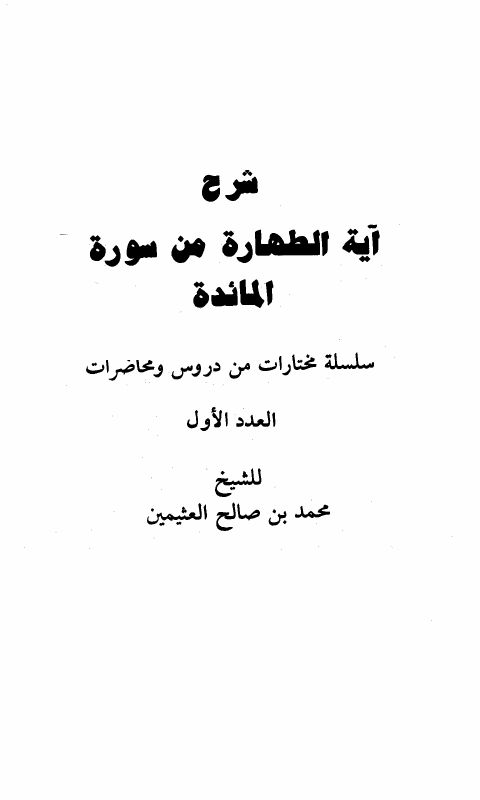

Publishers
دار النفائس
Publisher
Resources
مفتاح الجنة في الاعتصام بالسنة - ط الريان
مفتاح الجنة في الاعتصام بالسنة - ط الريان
جلال الدين عبد الرحمن السيوطي

شرح آية الطهارة من سورة المائدة
شرح آية الطهارة من سورة المائدة
محمد بن صالح العثيمين